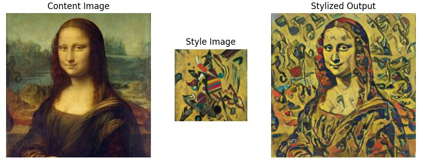
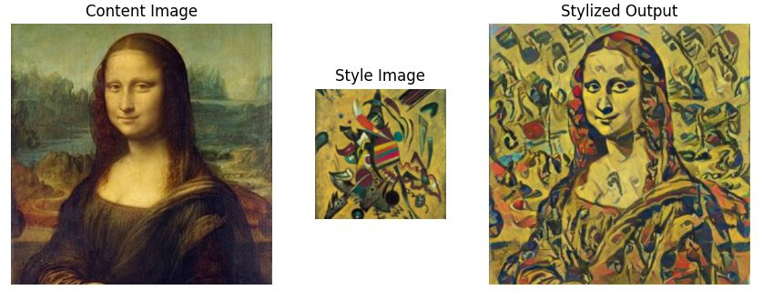

Usage
First, install the package with pip:
pip install tfhub-styletransfer-wrapper
Then, import the package in Python:
from tfhub_styletransfer_wrapper import StyleHub
Initiate the StyleHub module, and load the content and style images:
stylehub = StyleHub()
stylehub.load_content(content_filename, 512)
stylehub.load_style(style_filename, 256)
Finally, evaluate the model:
stylized_image = stylehub.evaluate()
And save the stylized image:
from tfhub_styletransfer_wrapper import save_image
save_image(stylized_image, output_filename)
Examples

 
